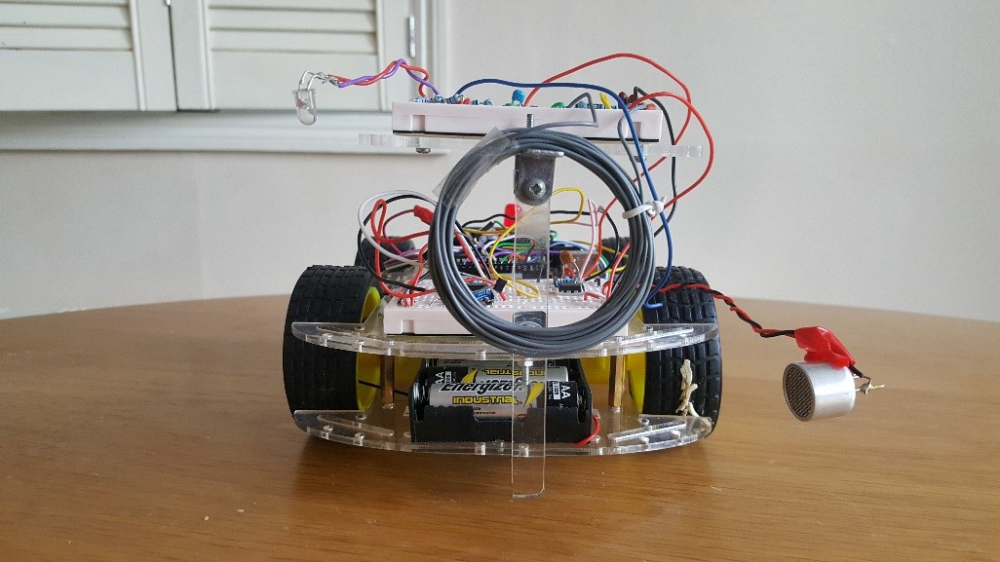

Undergraduate Electrical and Electronic Engineering
Fuzzy Logic Dual Axis Solar Panel

Connected bee hive monitoring system
Dual axis solar panel sun tracker project made during my summer internship at UNESP University in Sao Paulo Brazil. Implements fuzzy logic to ensure precise sun tracking even when individual LDRs have different light response characteristics.
Learn MoreSmart Hive

Connected bee hive monitoring system
Beekeepers only have access to a limited amount of information on their hive’s health, as inspecting a hive too frequently disturbs the bees. Our project was to design an electronic hive monitoring system which can assist bee keepers in identifying and treating problems within the hive. Our system includes weight, activity, temperature and humidity sensing, as well as a heated frame in order to treat Varroa mites.
Team members: Joao Baptista, Noet Guisset, Edoardo David Santi, Albert Fleta Moya, Anselm Lohmann
Learn More (Project Website)Autonomous Robot

Self navigating robot design
This was a personal project that I worked on at the end of High School. My goal was to build a robot which could autonomously navigate between two pre-defined points in an unknown environment. The robot reads data from its wheel encoders, and uses distance sensors to gain information about its environment. It uses this information to follow a state machine and ultimately move to its target location.
Learn MoreEEE Rover
A rover designed to detect signals for first year competition
This rover was built as an entry to our University’s Rover design challenge. In groups of six we were asked to design and build a remote controlled rover which could navigate across an obstacle-filled arena in order to identify unknown “elements”. The “elements” were PVC tubes which emitted different radio, infrared, and magnetic signals with different baseband and carrier frequencies.